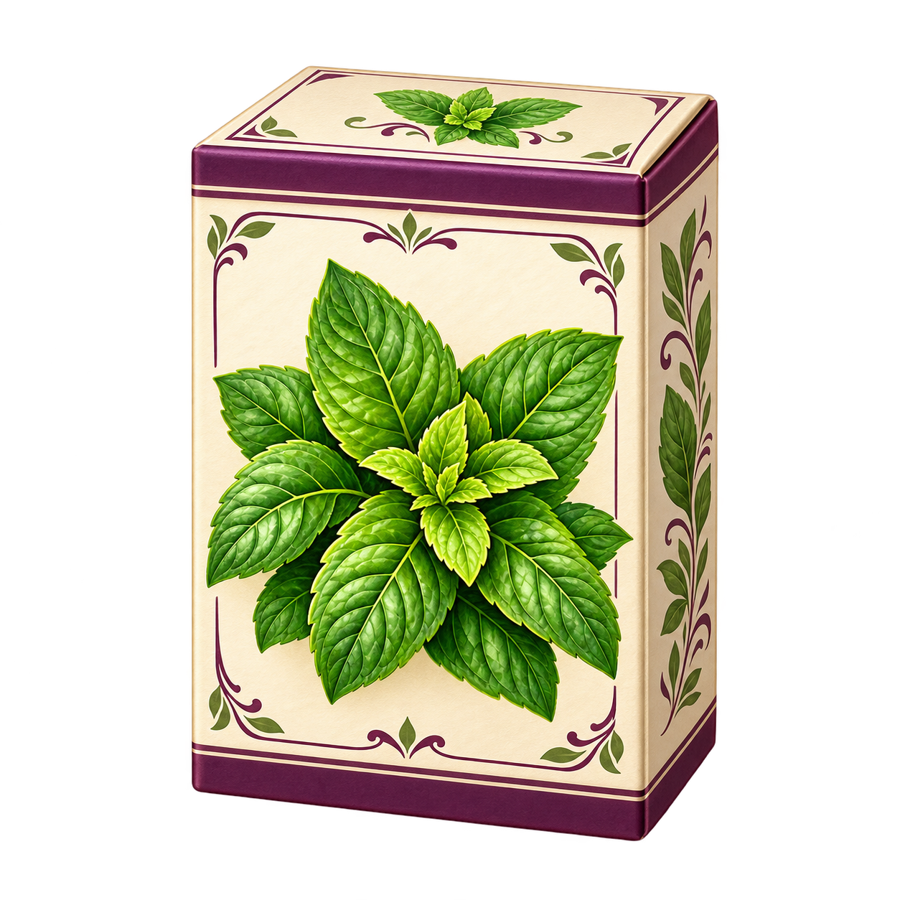
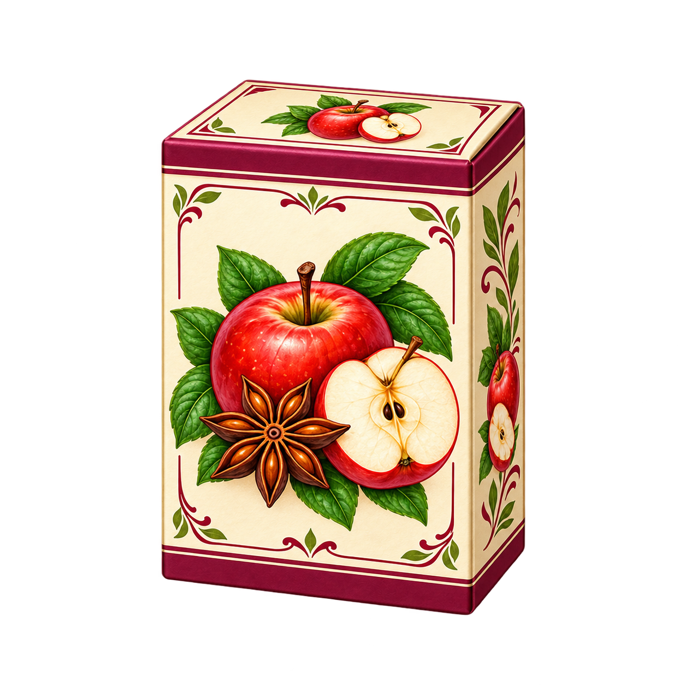
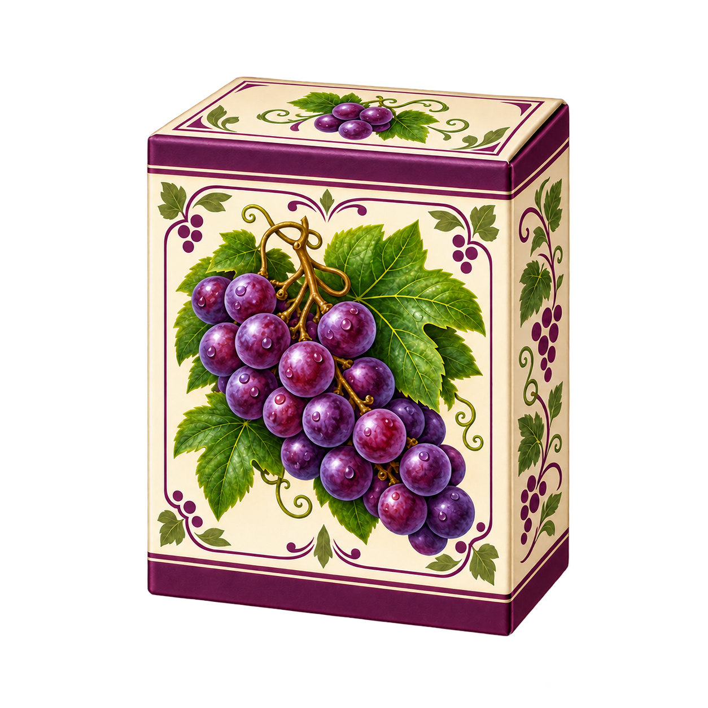
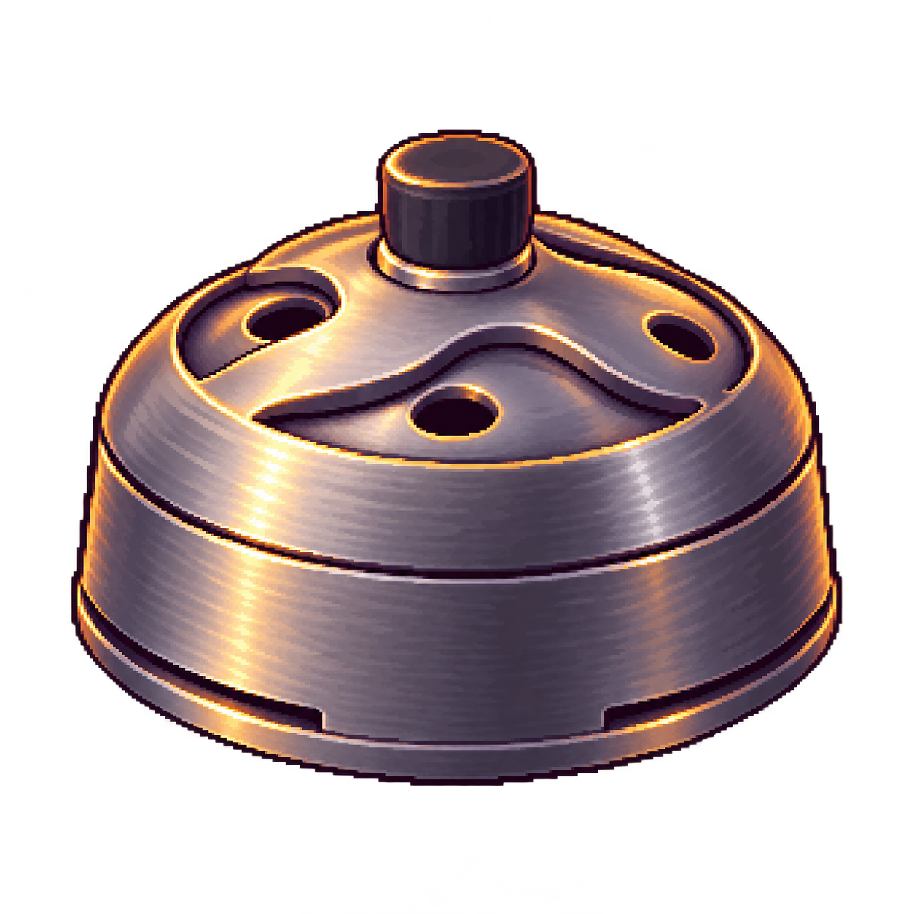
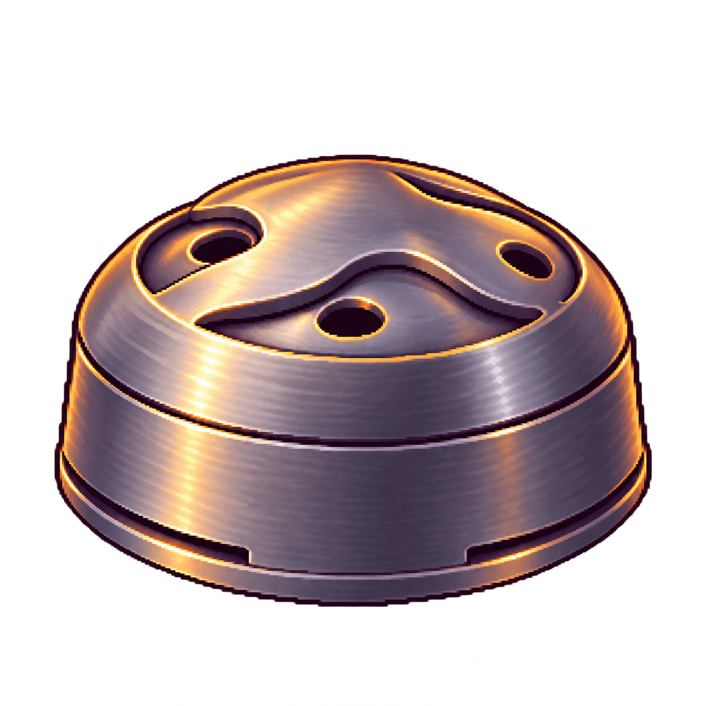

旧21点は別案として全て保持。実在メーカーは構造・配置の参照のみ。ゲームの既存ブランドはアルファーヘブン（AF）。
HMDはtanukish_lidの大きい上部突起を除去する解釈。器具や機能の削除ではありません。
| 商品 | 旧案（保持） | 新代表案（未採用） |
|---|---|---|
| アルファーヘブン ミント |  | |
| アルファーヘブン ダブルアップル |  | |
| アルファーヘブン グレープ |  | |
| tanukish_lid（HMD・上部突起修正） |  |  |
公式参照URL・生成プロンプト・対応IDは manifest / prompts に記録。メーカー写真は同梱していません。